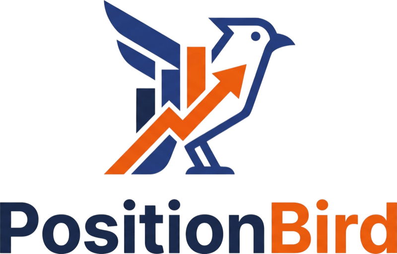
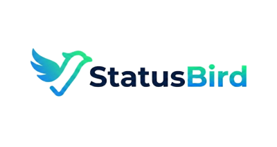

Founder · 2026 – present
PositionBird is the second company I founded and built. Shoppers increasingly ask ChatGPT, Perplexity, Gemini, and Claude what to buy instead of typing into Google, and most brands have no idea whether those answers mention them, cite them, or hand the sale to a competitor.
PositionBird measures it. It asks each engine real buyer-intent questions through their official APIs, detects every brand mention and citation, and turns the results into a 0–100 AI Visibility Score and a Share of Voice benchmark against the competitors a brand chooses. It ships as a Shopify app and as a web signup for companies that don't run on Shopify.
I write the specs the build runs on, covering what gets stored, what runs on a schedule, how visibility is scored, and what the app shows. I also set pricing and positioning for a category that did not exist eighteen months ago, and built the proof and drop-alert features that carry the value proposition.
Visit PositionBird.ioScheduled scans across ChatGPT, Perplexity, Gemini, Claude, and classic Google results. Every mention and citation is detected and scored, then benchmarked against competitors so a brand knows exactly where it stands.
Asks five AI engines real buying questions every week and truth-checks each answer against the store's live catalog, so wrong prices, missing products, and bad recommendations surface before customers find them.
Research puts roughly one in ten AI factual answers wrong: closed when open, wrong prices, false warnings. PositionBird checks what AI is telling shoppers about a brand's hours, prices, and policies and alerts when the story changes.
Attributes orders to the AI engine that sent the buyer, prices what every outage cost against normal hourly revenue, and emails a weekly ledger. Connects directly to StatusBird's incident feed.
Turns scan data into a ranked plan of the sources each engine actually cites for a brand's category, so the work of earning citations starts with the pages that move the score.
Which engines and models are queried, how prompts are sampled, how the score is computed, and what the method cannot tell you. Very few tools in the category publish this; PositionBird does.
PositionBird launched publicly on the Shopify App Store in September 2026, alongside a web signup for brands on any platform. There is a free plan, and paid plans at $19, $49, and $79 a month with a 7-day trial. Run a free scan and see what AI is saying about your brand today.
Four products, one question each, for every e-commerce brand: are you up, are you found, are you chosen, and what is it worth.

Monitors your storefront and the services it depends on, and alerts you the moment something goes down.
Learn more Are you found?Measures whether AI answer engines mention and cite your store when shoppers ask what to buy.
Learn more Are you chosen?Sends AI shopping for what you sell and verifies who gets recommended, with your real price and stock.
Visit What is it worth?Puts a dollar figure on every finding: AI-referred revenue by engine, the cost of each incident, and revenue at risk from misquoted products.
Visit"We are what we repeatedly do. Excellence, then, is not an act, but a habit." — Aristotle